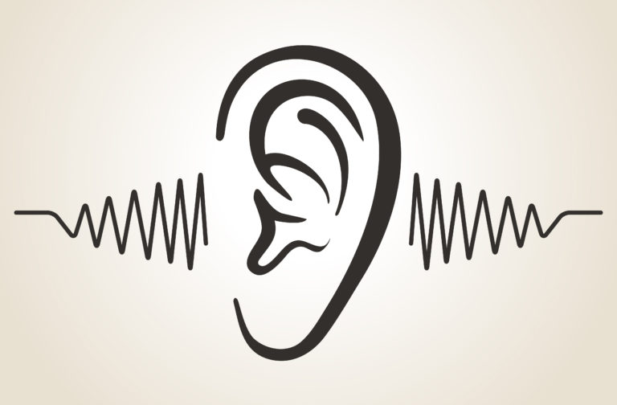

Bilo da se radi o neformalnoj ili o formalnoj komunikaciji, kada aktivno slušate, vi pokazujete interesovanje i za temu i za sagovornika. Na taj način vi ćete bolje razumeti sagovornika i situaciju u kojoj se on ili ona nalazi. Aktivnim slušanjem omogućavate komunikaciji da se nesmetano odvija i dobijate pojašnjenja i dodatne detalje, odnosno stičete uvid u širu sliku. Posledično i odnos sa sagovornikom postaje dublji, saradnja je olakšana i stvoren je kontekst za rešavanje problema.
„Razlog zbog kog imamo dva uva, a samo jedna usta jeste da bismo mogli više slušati, a manje govoriti”, stara je latinska poslovica. Slušanje je jedan od osnovnih procesa prilikom komunikacije, kada saslušamo drugog i razumemo njegovu perspektivu, možemo dati odgovarajući komentar i tako nastaviti komunikaciju sa drugom osobom. Zanimljiva činjenica je da je slušanje jedna od retkih stvari koju nismo učili (poput govora, hoda ili sličnog), pa joj se samim tim kroz život moramo posvetiti.
U komunikaciji imamo tri osnovna elementa: pošiljaoca poruke, poruku i primaoca poruke. Kanal kojim se šalje poruka često ima razne „šumove”, odnosno izazov je primiti poruku sa onim značenjem sa kojim je pošiljalac hteo da je pošalje. Aktivnim slušanjem se borimo protiv tih šumova, odnosno u najširem smislu, aktivno slušanje je veština razumevanja poruke osobe koja je tu poruku poslala. U užem smislu, aktivno slušanje je usmeravanje pažnje na poruku druge osobe i davanje povratne informacije sagovorniku o tome kako smo razumeli njegovu poruku (i reči i ton poruke, odnosno osećanja).
Da bi se slušanje moglo nazvati aktivnim, potrebno je da koristite sledeće veštine:
Parafraziranje se sastoji od toga da ponovite svojim rečima ono što ste od predavača čuli. Parafraziranje izrečenog obično počinjete rečima „Drugim rečima…”, ili „Dakle, vi kažete…”, „Kako sam vas ja razumeo…” i slično. Na taj način drugoj osobi dajete mogućnost da ispravi ili potvrdi ono što ste čuli i razumeli. Na primer, prilikom razmene mejlova sa voditeljem kursa, da biste bili sigurni da ste razumeli ono što vam je voditelj napisao, možete koristiti tehniku parafraziranja – možete svojim rečima reći ono što je on ili ona napisao/la i proveriti tako sa njim ili njom da li ste ga/je dobro razumeli.
Cilj sažimanja je da prepričate, da na sažetiji način prikažete sadržaj koji ste čuli i videli, zarad pojašnjavanja problema i isticanja ključnih tačaka. Jedna od najvažnijih stvari u učenju jeste prepoznavanje ključnih činjenica u sadržaju i njihovo povezivanje. Jedan oblik sažimanja je i rezime, koji se nalazi na kraju svake nastavne jedinice.
Korišćenje ovih tehnika služi proveravanju razumevanja onoga što vam je sagovornik rekao, a nikako ne znači da ste saglasni sa svim onim što je druga osoba rekla. Najvažnije je da razumete najpre šta je sagovornik hteo da kaže, a onda u zavisnosti od toga da li ste s tim mišljenjem saglasni ili niste, možete da iznesete svoj stav. Prilikom učenja, ukoliko naiđete na neki stav autora kursa sa kojim niste saglasni, najpre proverite da li ste ga dobro razumeli. Ukoliko ste razumeli stav autora kursa, i niste sa tim stavom saglasni, uradite istraživanje. Proverite da li još neko ima drugačiji stav, pokušajte da nađete još informacija o datoj temi. Nesaglasnost bez argumenata (na primer, kada kažete „ne deluje mi da je to tako”) u procesu učenja nema svrhu. Međutim, ako vas nesaglasnost podstakne na istraživanje, bilo da dokažete da ste u pravu ili ne uspete u tome, ovo će imati velikog uticaja na vaše učenje, jer informacije koje na ovaj način obradite sigurno ćete mnogo duže pamtiti nego one oko kojih se niste angažovali.
Prema SIER modelu, postoje četiri vrste aktivnosti koje predstavljaju niz koraka u procesu aktivnog slušanja. Ovi koraci se mogu primeniti i pri slušanju predavanja, tako da ćemo objasniti njihovu primenu u toj funkciji.
SIER model:
Postoji više vrsta neslušanja i svako od njih u osnovi ima drugačiji, prikriveni motiv:
Suština aktivnog slušanja jeste da se saglasite sa svim iznetim činjenicama koje je predavač izneo.
Suština je u razumevanju, a ne u saglasnosti. Dok slušate stalno treba da se preispitujete da li ste razumeli iznete činjenice. Ponavljanje izrečenog svojim rečima će vam olakšati da uočite propuste u razumevanju. Nesaglasnost je takođe korisna u procesu učenja, jer nas podstiče na istraživanje, ali ono ima svrhu samo ukoliko je pravilno argumentovano.
„Čoveku treba otprilike dve godine da nauči govoriti i otprilike 50 godina da nauči ćutati”, Ernest Hemingvej
Da bismo u potpunosti razumeli i primenili tehnike aktivnog slušanja moramo razumeti i pojam kritičkog mišljenja. U narednom delu prikazaćemo glavne karakteristike kritičkog mišljenja, kako biste shvatili njegovu povezanost sa aktivnim slušanjem.
Iako postoji mnogo određenja kritičkog mišljenja, ono što se uglavnom u svim određenjima smatra kao odlikom kritičkog mišljenja jeste to da se ovaj oblik mišljenja odnosi na pronalaženje nedostataka, nedovršenosti, nedoslednosti, grešaka u logici određenih ideja, pretpostavki, zaključaka, tvrdnji ili teorija, da bi se stvorile nove ili upotpunile postojeće misli, ideje, pretpostavke, zaključci, ili teorije. Kritičko mišljenje uključuje sledeće intelektualne sposobnosti:
Dakle, kada sumiramo prethodno napisano, možemo reći da se kritičko mišljenje zasniva na racionalnim argumentima, na kriterijumima, procenjivanju i vrednovanju. Prednosti kritičkog mišljenja obuhvataju otpornost na preuranjene zaključke, stavove i sudove, otvorenost za promene, uspešno rešavanje problema… Kada kritičko mišljenje dovedemo u vezu sa aktivnim slušanjem, možemo videti da je aktivno slušanje pojam koji je podređen pojmu kritičkog mišljenja. Naime, ukoliko želite da izložite nesaglasnost sa datom teorijom, najpre će biti potrebno da ste razumeli šta ona sve obuhvata, da razumete šta autor sve pod određenim delovima teorije podrazumeva, a to ćete postići aktivnim slušanjem. Nakon toga možete izneti argumente zašto niste saglasni sa određenom teorijom ili sa određenim autorom.